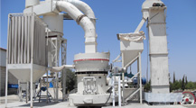

HJ Series Jaw Crusher
HJ series high jaw crusher is my company in the foundation of introducing, absorbing domestic and foreign advanced technology, according to the actual needs of the customer site, R & D design concept of high input, high output based on a set of low energy consumption, high production capacity, in one of the modern high performance crusher. The practice proves that the HJ series high jaw crusher to the quality of its excellent performance, reliable and cost-effective to win global customer trust, is the traditional jaw crusher ideal upgrade replacement product.
Detailed introduction
- 1. high performance. The models yield, through the movable jaw trajectory and cavity is optimized, to determine its optimal meshing angle and travel characteristic value, the model under the condition of same power output greatly enhance.
- 2. good stability. Through optimization of the models the overall structure and the counterweight part, to determine the flywheel, Cao wheel structure and the weight of weight block, so that the machine has been greatly improved in vibration. Jaw type with the same specifications of the crusher, and has higher stability.
- 3. high reliability. After heat treatment, forging an eccentric shaft bearing, large E type frame, labyrinth seal made equipment durable, more reliable.
- 4. easy operation, convenient repair. Advanced side protecting plate bolt system make the models in the replacement of side guard plate more quickly; the machine structure is reasonable to make this type of machine is more convenient in adjusting the discharge size and replacement of elbow board, can effectively shorten the operation time, maintenance.
- 5. wide application. HJ series high jaw crusher has the advantages of compact structure, the jaw type with the same specifications of the crusher, covers an area of smaller, so that it can play a greater role in the limited space, and is applicable to various crushing process.
| Model | Feed Opening (mm) | Max Feeding (mm) | Discharge Opening (mm) | Capacity(t/h) | Power (kW) | Machine Size(mm) |
|---|---|---|---|---|---|---|
| HJ98 | 650×980 | 560 | 75-175 | 110-350 | 90-110 | 2470×2000×2180 |
| HJ110 | 800×1100 | 660 | 100-200 | 215-510 | 110-132 | 2875×2472×2530 |
| HJ125 | 950×1250 | 800 | 125-225 | 280-650 | 132-160 | 3320×2600×3120 |
[size]: 150-800mm feed
[Production capacity]: 110-650T/h
[Application field]: building stone crushing, metal ore crushing and solid waste treatment.
[material]: for gravel, limestone, dolomite, granite, diabase, basalt, rhyolite, ferrous metal ore, non-ferrous metal ore, construction waste, coal gangue, tailings.
HJ Jaw Crusher Working principle
Motor drive host Cao wheel through a triangle belt, and then drives the eccentric shaft to rotate when moving jaw, jaw drives the movable jaw plate to the fixed jaw plate movement, the material is crushed or split pieces. When the movable jaw body drives the movable jaw plate away from the fixed jaw plate, has been broken material is discharged from the discharge port in the lower part of the jaw plate. With the continuous rotation of the motor, the crusher periodically breakage and discharge. And compared to traditional jaw crusher, jaw crusher of HJ high precision optimization on the whole structure, the movable jaw trajectory, cavity cavity type through the machine, making the yield and stability of this model are greatly enhanced, and the machine is equipped with a forged an eccentric shaft, bearing, large E type frame, labyrinth seal quality parts the equipment, more durable, more reliable. Even in the face of basalt, granite, quartzite, high hardness of rock, HJ high energy jaw crusher can be one-time crushing to medium size, reduce the two or three stage crushing equipment pressure and wear, effectively reducing the cost of production. This to the customer, is undoubtedly the best commitment and security.
HJ series high jaw crusher
HJ series high jaw crusher is my company in the foundation of introducing, absorbing domestic and foreign advanced technology, according to the actual needs of customers and site, R & D design concept of high input, high output based on the low energy consumption, high production capacity, set in one of the modern high performance crusher. The practice proves that the HJ series high jaw crusher to the quality of its excellent performance, reliable and cost-effective to win global customer trust, is the traditional ideal replace jaw crusher.
Products Center
- Crushing Equipment
- HJ Series Jaw Crusher
- PE Series Jaw Crusher
- PEW Series Jaw Crusher
- HPT Cone Crusher
- HST Series Single Cylinder Hydraulic Cone Crusher
- HP Series Cone Crusher (Hydraulic)
- S Series Cone Crusher
- PFW Series Impact Crusher (hydraulic)
- PF Series Impact Crusher
- B Series Deep Rotor Vertical Shaft Impact Crusher
- B Series VSI Sand Making Machine
- Grinding Equipment
- Feeding & Conveying
- Screening & Washing
- Mobile Crushing Plant
- Track Mounted Mobile Crushing Plant
- Complete Crushing Plant
- Mining Equipment
- FL Spiral Classifier
- FX Series Hydro-cyclone
- BF Series Flotation Machine
- CT Series Wet Magnetic Separator
- SF Series Flotation Cell
- XCF/KYF Series Flotation Machine
- GX High Efficiency Thickener
- NZ Center Drive Thickener
- NG Peripheral Traction Thickener
- ZGT Series High Gradient Magnetic Separator
- XAMY Series Filter
- CTL Series Dry Magnetic Separator